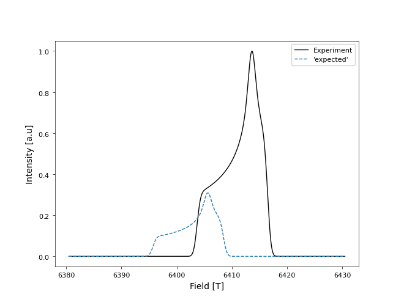
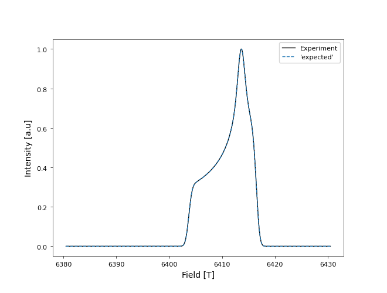
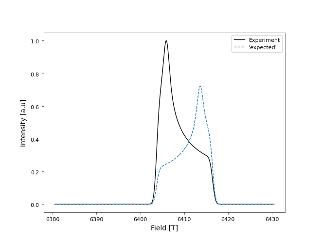
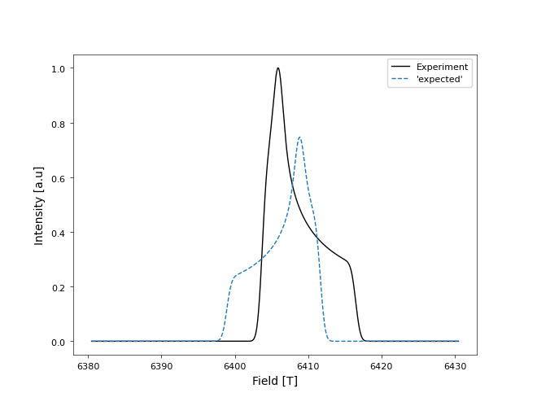
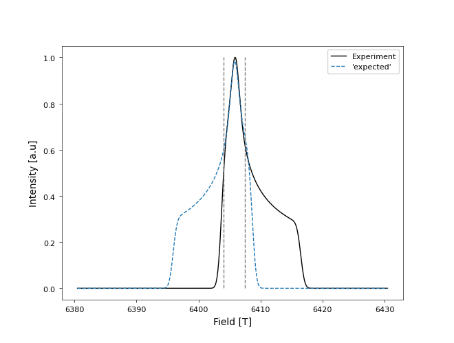

Quantifying the quality of a Fitting
Importing packages
[4]:
from myutils.g_values.best_fit import TheoMatchExpe
from myutils.plotters import StandardPlotter
from scipy.stats import pearsonr
import numpy as np
Best fitting of a function as a linear combination of another
We take two functions, f(x) and g(x) = f(x + 8). We try to automatically find a coeficient c, such that c * g(x) minimizes the error respect to f(x)
[5]:
tme = TheoMatchExpe(['shifted-spectrum2.dat'],
experiment_file='spectrum2.dat')
sp = StandardPlotter(ax_pref={'xlabel': 'Field [T]',
'ylabel': 'Intensity [a.u]'},
plot_pref={'pstyle': '-'})
sp.plot_data(tme.fieldexp, tme.intensexp, pstyle='-', color_plot='black', data_label='Experiment')
sp.plot_data(tme.fieldexp, tme.coeffs[0] * tme.intensities[0], pstyle='--', data_label="'expected'");
#sp.plot_data([limi[0], limi[0]], [0,1], pstyle='--', color_plot='black');
#sp.plot_data([limi[1], limi[1]], [0,1], pstyle='--', color_plot='black');
sp.axis_setter(legend=True)
[5]:
<Axes: xlabel='Field [T]', ylabel='Intensity [a.u]'>

In this case, tme.coeffs[0] is the expected c. and the correlation and error are:
[6]:
tme.corr, tme.error
[6]:
(0.10144641785100936, 5.418083241428031)
If we assume that we don’t know the value d that maximizes the fit with f(x) fiven g(x+d). By definition, we know that it tis 8, but let’s find it automatically.
[7]:
tme = TheoMatchExpe(['shifted-spectrum2.dat'],
experiment_file='spectrum2.dat',
shifting_width=10)
sp = StandardPlotter(ax_pref={'xlabel': 'Field [T]',
'ylabel': 'Intensity [a.u]'}
)
sp.plot_data(tme.fieldexp, tme.intensexp, pstyle='-', color_plot='black', data_label='Experiment')
sp.plot_data(tme.fieldexp, tme.coeffs[0] * tme.intensities[0], pstyle='--', data_label="'expected'");
sp.axis_setter(legend=True)
[7]:
<Axes: xlabel='Field [T]', ylabel='Intensity [a.u]'>

We can see then, that the predicted shift is quite as expected
[8]:
tme.shift
[8]:
-8.000000000000007
And with this trick, we shifted the correlation
[9]:
tme.corr, tme.error
[9]:
(1.0, 5.414848257917464e-16)
Fitting a function into another which does not correspond more than one specific part
Now let’s take a function g(x) wich fits to another f(x) only in a range a < x < b. If we have a whole spectrum, the fitting is quite bad
[10]:
tme = TheoMatchExpe(['spectrum2.dat'],
experiment_file='spectrum1.dat',
shifting_width=0)
sp = StandardPlotter(ax_pref={'xlabel': 'Field [T]',
'ylabel': 'Intensity [a.u]'})
sp.plot_data(tme.fieldexp, tme.intensexp, pstyle='-', color_plot='black', data_label='Experiment')
sp.plot_data(tme.fieldexp, tme.coeffs[0] * tme.intensities[0], pstyle='--', data_label="'expected'");
sp.axis_setter(legend=True)
[10]:
<Axes: xlabel='Field [T]', ylabel='Intensity [a.u]'>

In this case, tme.coeffs[0] is the expected c. and the correlation is:
[11]:
tme.corr, tme.error
[11]:
(0.6821669627127219, 3.577719112054213)
Even, using the translation trick, the fitting doesn’t work so well
[12]:
tme = TheoMatchExpe(['spectrum2.dat'],
experiment_file='spectrum1.dat',
shifting_width=10)
sp = StandardPlotter(ax_pref={'xlabel': 'Field [T]',
'ylabel': 'Intensity [a.u]'})
sp.plot_data(tme.fieldexp, tme.intensexp, pstyle='-', color_plot='black', data_label='Experiment')
sp.plot_data(tme.fieldexp, tme.coeffs[0] * tme.intensities[0], pstyle='--', data_label="'expected'");
sp.axis_setter(legend=True)
[12]:
<Axes: xlabel='Field [T]', ylabel='Intensity [a.u]'>

the correlation improves, but not quite much:
[13]:
tme.corr, tme.error
[13]:
(0.71614135486836, 3.406189914303648)
[14]:
limi = [6404, 6407.5]
tme = TheoMatchExpe(['spectrum2.dat'],
experiment_file='spectrum1.dat',
fieldrange=limi,
shifting_width=10)
sp = StandardPlotter(ax_pref={'xlabel': 'Field [T]',
'ylabel': 'Intensity [a.u]'})
sp.plot_data(tme.fieldexp, tme.intensexp, pstyle='-', color_plot='black', data_label='Experiment')
sp.plot_data(tme.fieldexp, tme.coeffs[0] * tme.intensities[0], pstyle='--', data_label="'expected'");
sp.plot_data([limi[0], limi[0]], [0,1], pstyle='--', color_plot='gray');
sp.plot_data([limi[1], limi[1]], [0,1], pstyle='--', color_plot='gray');
sp.axis_setter(legend=True)
[14]:
<Axes: xlabel='Field [T]', ylabel='Intensity [a.u]'>

[15]:
tme.corr, tme.error
[15]:
(0.9936567996293036, 0.12915601536886243)
Why error and correlation?
In certain applications, we need a quantity that says which function fits better independent of the scale and the translation in the y axis. Let’s see what haappens with the error and the correlation, when we compare f(x) vs g(x) with f(x) vs a * g(x) + b
[16]:
tme = TheoMatchExpe(['shifted-spectrum2.dat'], experiment_file='spectrum2.dat')
[17]:
error = np.linalg.norm(tme.intensexp - tme.intensfit)
corr = pearsonr(tme.intensexp, tme.intensfit)[0]
print(f'error of f(x) vs g(x): {error:0.5f}')
print(f'correlation of f(x) vs g(x): {corr:0.5f}')
error of f(x) vs g(x): 5.41808
correlation of f(x) vs g(x): 0.10279
[18]:
error = np.linalg.norm(tme.intensexp - 7 * tme.intensfit + 4)
corr = pearsonr(tme.intensexp, 7 * tme.intensfit + 4)[0]
print(f'error of f(x) vs g(x): {error:0.5f}')
print(f'correlation of f(x) vs 7*g(x)+4: {corr:0.5f}')
error of f(x) vs g(x): 77.76395
correlation of f(x) vs 7*g(x)+4: 0.10279
Notice that the correlation does not depend on the scale and translation on the y axis.